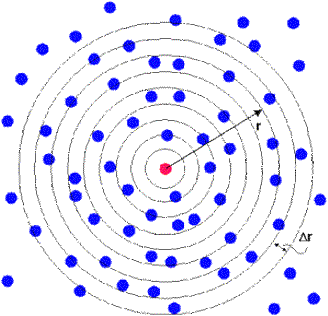
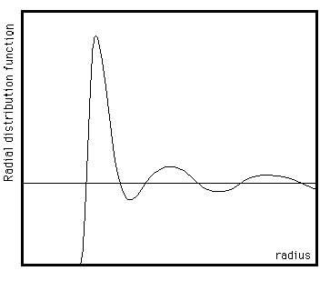

The Radial Distribution Function
The Radial Distribution Function
The radial distribution function (or RDF) is an example of a pair correlation function, which describes how, on average, the atoms in a system are radially packed around each other. This proves to be a particularly effective way of describing the average structure of disordered molecular systems such as liquids. Also in systems like liquids, where there is continual movement of the atoms and a single snapshot of the system shows only the instantaneous disorder, it is extremely useful to be able to deal with the average structure.
The RDF is useful in other ways. For example, it is something that can be deduced experimentally from x-ray or neutron diffraction studies, thus providing a direct comparison between experiment and simulation. It can also be used in conjunction with the interatomic pair potential function to calculate the internal energy of the system, usually quite accurately.

To construct an RDF is simple. Choose an atom in the system and draw around it a series of concentric spheres, set at a small fixed distance (Δr) apart (see figure above). At regular intervals a snapshot of the system is taken and the number of atoms found in each shell is counted and stored. At the end of the simulation, the average number of atoms in each shell is calculated. This is then divided by the volume of each shell and the average density of atoms in the system. The result is the RDF. Mathematically the formula is:
g(r) = n(r) / (ρ 4π r2 Δr)
In which g(r) is the RDF, n(r) is the mean number of atoms in a shell of width Δr at distance r, and ρ is the mean atom density. The method need not be restricted to one atom. All the atoms in the system can be treated in this way, leading to an improved determination of the RDF as an average over many atoms.
The RDF is usually plotted as a function of the interatomic separation r. A typical RDF plot (below) shows a number of important features. Firstly, at short separations (small r) the RDF is zero. This indicates the effective width of the atoms, since they cannot approach any more closely. Secondly, a number of obvious peaks appear, which indicate that the atoms pack around each other in `shells' of neighbours. The occurrence of peaks at long range indicates a high degree of ordering. Usually, at high temperature the peaks are broad, indicating thermal motion, while at low temperature they are sharp. They are particularly sharp in crystalline materials, where atoms are strongly confined in their positions. At very long range every RDF tends to a value of 1, which happens because the RDF describes the average density at this range.
